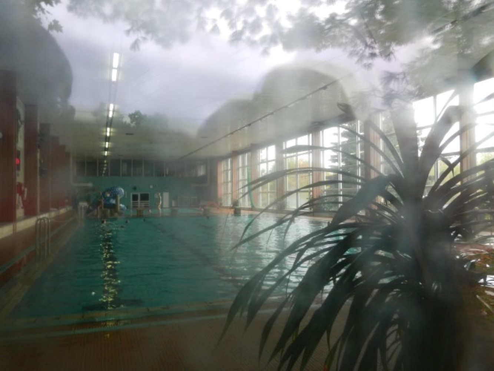

Jornadas EREMUAK
AZKUNA ZENTROA. Bilbao, Spain, 01.12 / 02.12
with: ANTespacio, Cristina Arrazola, Rubén Castillejo, Miguel A. García, Oihana Garro y Javi Manterola, Iñaki Imaz, Oier Iruretagoiena, David Martínez, Jorge Núñez, Olatz Otalora, Jon Otamendi, Iskandar Rementeria, Beatriz Setién, Larraitz Torres y Maite Vélaz
El Gran Tour
SANT ANDREU CONTEMPORANI. Barcelona, Spain, 24.11 / 15.01.17
curated by Beatriz Escudero
with: Irene de Andrés, Joan Bennassar, Guillermo Ros, Francesc Ruiz Abad, Clara Sánchez Sala, Mario Santamaria, Aldo Urbano, Pol Viladoms y Fluorescer (Estel Boada y Xavi Rodríguez Martín)
SCAN FotoBooks 16
International photography festival. Tarragona, Spain, 19.10 / 07.01.2017
Brotherhood and Unity
Video Wall. KD Galerija GT. Ljubljana, Slovenia, 16.08 / 29.08
Atelje Azil Art Residency
KUD MREZA. Autonomous Cultural Centre Metelkova. Ljubljana, Slovenia, 10.07 / 20.08
I feel sLOVEvenia Art Residency + Exhibition
Culture Point CARINARNICA. Nova Gorica, Slovenia, & Gorizia, Italy, 01.08 / 15.08
with: Nina Bric
Colonia d‘arte Alpe Adria 2016
Area Festeggiamenti. LUSEVERA, Italy,
25.07 / 30.07
Projekt Beton
EREMUAK open programme. 2016 / 2017
Güeñes no-turismo
Tour + Workshop. ARENATZARTE. Güeñes, Spain, 14.05
Albania 1983/1991 | ! Bashkohuni ! | Logline of a Revolution | Teaser 3
Bratstvo / Jedinstvo
Sala REKALDE. Bilbao, Spain, 08.03 / 08.05
_2015
Atelje Azil Art Residency
KUD MREZA. Autonomous Cultural Centre Metelkova. Ljubljana, Slovenia, 01.11 / 1.12
Fotonoviembre 2015
International photography festival. Tenerife, Spain, 09.11 / 15.12
Parallel Vienna 2015
ALTE POST Dominikanerbastei 11. Vienna, Austria, 23.09 / 27.09
with: David Altweger,
Michaela Altweger,
Sarah Bayliss,
Rosa Beiroa,
Rob Crosse,
Jane Frances Dunlop,
Karlos Gil,
Patrick Goddard,
Ting Jumper,
Gabrielle Le Bayon,
Mira Loew,
Maria Angelica Madero, Rafa Prada,
Sagberg,
Hana Vojáková,
Belen Zahera.
Springboard
OKELA, Bilbao, Spain, 24.09 / 01.10
PRALINE, Leipzig, Germany, 29.10 / 15.11
with: Zuhar Iruretagoiena Labeaga, Oihane Sanchez Duro, Helene Goñi, Karlos Martinez Bordoy, Ranja Akl, Yvonne Anders, Max Baitinger, Romy Julia Kroppe, Georg Oberhumer, Marike Schreiber, Stefanie Schroeder, Alexander Schuster.
Verkehr für Memschen
GROUP GLOBAL 3000, Berlin, Germany, 11.09 / 30.10
with: Tom Albrecht, Benna, Irmingard Beierle, Stefano Cassetti, Mariel Gottwick, Stephan Groß, Katrin Kinsler, Javier Pérez-Lanzac, Naemeh Shirazi, Herbert Christian Stöger, Third Eye Factory.
Beginnings / Frontiers / of Europe #Armenia
PUBLICATION
Meeting Point
Public space. KUNSTVEREIN KONSTANZ, Germany, & KUNSTRAUM KREUZLINGEN, Switzerland, 24.05 / 30.08
curated by Axel Lapp
with: Gili Avissar, Marc Bauer, Daniel Gustav Cramer & Haris Epaminonda, Nick Crowe & Ian Rawlinson, Markus Daum, Hannes Egger, Amit Goffer, Leah Gordon, Siggi Hofer, Azade Köker, Alexej Meschtschanow, Marlies Pekarek, Alexandra Vogt
9.980km el horizonte que nos separa
IMAGINARIA 2015 photo festival, Castelló de la Plana, Spain, 08.05 / 12.06
curated by Fernando García Malmierca
with: Celeste Martínez, Alejandro Almaraz, María José D’Amico, Esteban Pastorino, Lorena Guillén Vaschetti, Gerardo Repetto, Valentín Vallhonrat, Lara Almarcegui, Irene Cruz, Javier Vallhonrat, Elena Morón Serna & Jesús Marina Barba
HYPER HYPER
SPINNEREI (Spinnereeirundgang), Leipzig, Germany, 1.05 / 2.05
with:
Anna Kautenburger,
Anushka Rustomji,
Duane Bahia Benatti,
Jan Kaesbach,
Michael Hazell,
Pilar Cordoba,
Rediet Sisay Biru,
Sophie Stephan,
Vemo Liwei Hang
Wo wir sind / Donde estamos
D21 KUNSTRAUM, Leipzig, Germany, 26.03 / 03.05
curated by Ines Bermejo & Constanze Müller
with: Amaia Gracia, Antonio Barea, Eva Walker, Fabian Reimann, Ibai León, Jonas Wilisch, Juan Pablo Ordúnez, Mathias Zielfeld, Nina K. Doege, Pau Figueres, Peter Udo Brückner, Sandra Montero, Wibke Rahn, Yvonne Chabrowski
Pilotenkueche Art Residency
SPINNEREI, Leipzig, Germany, 1.02 / 31.05
Fènix: Compared Cartography
SANT ANDREU CONTEMPORANI, Barcelona, Spain, 16.01 / 17.01
_2014
Mapamundistas 2014
Sala de Exposiciones CONDE RODEZNO, Pamplona, Spain, 10.10 / 9.11
curated by Alexandra Baurès
with: Benoît Broisat,
Amaia Gracia,
Mateo Mate,
Kate McLean
18/19/2013
BILBAOARTE, Bilbao, Spain, 03.10 / 24.10
>>> Catalogue
9.980km el horizonte que nos separa
DOMUS ARTIUM 2002, Salamanca,Spain, 19.06 / 28.09
curated by Fernando García Malmierca
with: Celeste Martínez, Alejandro Almaraz, María José D’Amico, Esteban Pastorino, Lorena Guillén Vaschetti, Gerardo Repetto, Valentín Vallhonrat, Lara Almarcegui, Irene Cruz, Javier Vallhonrat
Bisitariak: Eriz Moreno
TABAKALERA, Donosia / San sebastian, Spain, 19.06
Արարատ
YEREVAN MODERN ART MUSEUM, Yerevan, Armenia, 13.05 / 25.05
with: Constanze Müller, Guillermo Rojas
ACSL Art Residency
Yerevan, Armenia,15.01 / 16.06
_2013

Puertas Abiertas 2013
BILBAOARTE, Bilbao, Spain, 5.12 / 13.12
Horizon
GUGGENHEIM Bilbao Museum, Spain, 04.09 / 29.09
curated by Alexandra Baurès
with:
Amaia Gracia, Antonio Barea, Bego Antón, Carla Andrade, Mikel Uribetxeberria, Sandra Montero